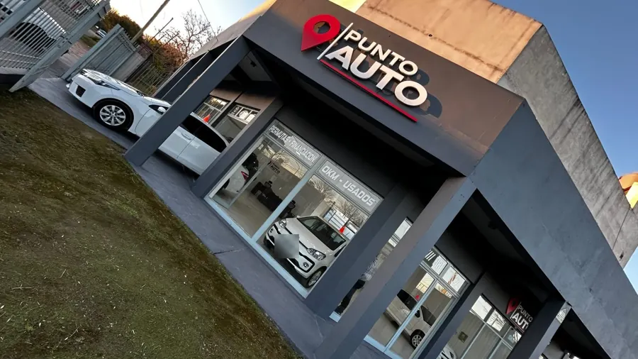

Autos y motos usados en Concepción del Uruguay
24 unidades publicadas en el Instagram de Punto Auto: 14 autos y 10 motos.

Unidades
Fotos y datos tomados de las publicaciones de @puntoautoer el 11 de octubre de 2026. Para saber si una unidad sigue disponible, hay que consultarla con el negocio.
Servicios
Autos y motos usados
Las publicaciones del negocio en Instagram son de autos y motos usados.
Financiación
El negocio la menciona en varias de sus publicaciones. Las condiciones de cada unidad se consultan con él.
Permutas
El negocio también ofrece recibir un vehículo como parte de pago, según sus publicaciones.
Contacto
Escribir por Instagram (@puntoautoer)
Opiniones de clientes: buscar Punto Auto en Google Maps.